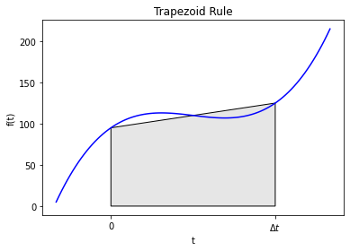
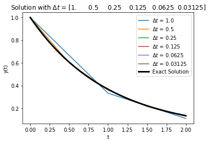
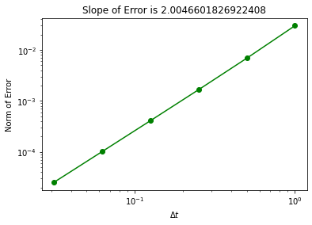
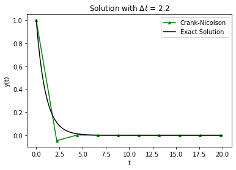

Crank-Nicolson (Trapezoid Rule)
Contents
6.6. Crank-Nicolson (Trapezoid Rule)#
Reference: Chapter 17 in Computational Nuclear Engineering and Radiological Science Using Python, R. McClarren (2018).
6.6.1. Learning Objectives#
After studying this notebook, completing the activties, and attending class, you should be able to:
Implement Crank-Nicolson (Trapezoid Rule) and understand how it is different from Forward/Backward Euler.
Explain the impact of step size on the accuracy of Crank-Nicolson.
# import libraries
import numpy as np
import matplotlib.pyplot as plt
from matplotlib.patches import Polygon
6.6.2. Main Idea#
Today, we will discuss techniques to compute approximate solutions to initial value problems (IVP). Every IVP has two parts:
System of differential equations.
Initial conditions that specify the numeric value for each different state at \(t=0\).
Let’s consider the generic, first-order initial value problem given by
where \(f(y,t)\) is a function that in general depends on \(y\) and \(t\). Typically, we’ll call \(t\) the time variable and \(y\) our solution. For a problem of this sort we can simply integrate both sides of the equation from \(t=0\) to \(t=\Delta t\), where \(\Delta t\) is called the time step. Doing this we get
Today’s class focuses on solving this problem. You’ll notice a lot of similarities to numeric integration as integrals and differential equations are closely related.
6.6.3. Crank-Nicolson (aka Trapezoid Rule)#
We could use the trapezoid rule to integrate the ODE over the timestep. Doing this gives
This method, often called Crank-Nicolson, is also an implicit method because \(y^{n+1}\) is on the right-hand side of the equation. For this method the equation we have to solve at each time step is
Though we saw it before let’s remind ourselves of the graphical representation of the trapezoid rule:
#graphical example
f = lambda x: (x-3)*(x-5)*(x-7)+110
x = np.linspace(0,10,100)
plt.plot(x,f(x),label="f(x)",color="blue")
ax = plt.gca()
a = 2
b = 8
verts = [(a,0),(a,f(a)), (b,f(b)),(b,0)]
poly = Polygon(verts, facecolor='0.9', edgecolor='k')
ax.add_patch(poly)
ax.set_xticks((a,b))
ax.set_xticklabels(('0','$\Delta t$'))
plt.xlabel("t")
plt.ylabel("f(t)")
plt.title("Trapezoid Rule")
plt.show()

6.6.4. Python Implementation#
Implementing this method is no more difficult than backward Euler.
Home Activity
Complete the function below. In the commented out spot, you’ll need to solve a nonlinear equation to calculate \(y^{n+1}\). Hints: You want to write two lines of code. The first line will use a lambda function to define the nonlinear equation to be solved. The second line will call inexact_newton to solve the system and store the answer in y[n]. Read these instructions again carefully.
def inexact_newton(f,x0,delta = 1.0e-7, epsilon=1.0e-6, LOUD=False):
"""Find the root of the function f via Newton-Raphson method
Args:
f: function to find root of
x0: initial guess
delta: finite difference parameter
epsilon: tolerance
Returns:
estimate of root
"""
x = x0
if (LOUD):
print("x0 =",x0)
iterations = 0
while (np.fabs(f(x)) > epsilon):
fx = f(x)
fxdelta = f(x+delta)
slope = (fxdelta - fx)/delta
if (LOUD):
print("x_",iterations+1,"=",x,"-",fx,"/",slope,"=",x - fx/slope)
x = x - fx/slope
iterations += 1
if LOUD:
print("It took",iterations,"iterations")
return x #return estimate of root
def crank_nicolson(f,y0,Delta_t,numsteps, LOUD=False):
"""Perform numsteps of the backward euler method starting at y0
of the ODE y'(t) = f(y,t)
Args:
f: function to integrate takes arguments y,t
y0: initial condition
Delta_t: time step size
numsteps: number of time steps
Returns:
a numpy array of the times and a numpy
array of the solution at those times
"""
numsteps = int(numsteps)
y = np.zeros(numsteps+1)
t = np.arange(numsteps+1)*Delta_t
y[0] = y0
for n in range(1,numsteps+1):
if LOUD:
print("\nt =",t[n])
# Add your solution here
if LOUD:
print("y =",y[n])
return t, y
Now let’s test our code using the simple problem from above.
RHS = lambda y,t: -y
Delta_t = 0.1
t_final = 0.4
t,y = crank_nicolson(RHS,1,Delta_t,t_final/Delta_t,True)
plt.plot(t,y,'-',label="Crank-Nicolson",color="green",marker="^",markersize=4)
t_fine = np.linspace(0,t_final,100)
plt.plot(t_fine,np.exp(-t_fine),label="Exact Solution",color="black")
plt.xlabel("t")
plt.ylabel("y(t)")
plt.legend()
plt.title("Solution with $\Delta t$ = " + str(Delta_t))
plt.show()
Your function in the last home activity works if it computes the following values:
t |
y |
|---|---|
0.0 |
1.0 |
0.1 |
0.9047619048250637 |
0.2 |
0.8185941043087901 |
0.3 |
0.7406327609899468 |
0.4 |
0.6700963075158828 |
# Removed autograder test. You may delete this cell.
6.6.5. Impact of Step Size on Integration Error#
Home Activity
Run the code below.
RHS = lambda y,t: -y
Delta_t = np.array([1.0,.5,.25,.125,.0625,.0625/2])
t_final = 2
error = np.zeros(Delta_t.size)
t_fine = np.linspace(0,t_final,100)
count = 0
for d in Delta_t:
t,y = crank_nicolson(RHS,1,d,t_final/d)
plt.plot(t,y,label="$\Delta t$ = " + str(d))
error[count] = np.linalg.norm((y-np.exp(-t)))/np.sqrt(t_final/d)
count += 1
plt.plot(t_fine,np.exp(-t_fine),linewidth=3,color="black",label="Exact Solution")
plt.xlabel("t")
plt.ylabel("y(t)")
plt.legend()
plt.title("Solution with $\Delta t$ = " + str(Delta_t))
plt.show()
plt.loglog(Delta_t,error,'o-',color="green")
slope = (np.log(error[-1]) - np.log(error[-2]))/(np.log(Delta_t[-1])- np.log(Delta_t[-2]))
plt.title("Slope of Error is " + str(slope))
plt.xlabel("$\Delta t$")
plt.ylabel("Norm of Error")
plt.show()


Now we get second-order convergence of the error as evidenced by the error plot.
6.6.6. Stability and Oscillations#
Let’s return to our trusty test problem to explore stability and oscillations with Crank-Nicolson.
Home Activity
Adjust the step size to answer the following questions.
Home Activity Questions:
At what step size (if any) does Crank-Nicolson become unstable? Why?
At what step size (if any) does Crank-Nicolson begin to oscillate? Why?
RHS = lambda y,t: -y
# adjust this
Delta_t = 2.2
# compute approximate solution with Crack-Nicolson, plot
t_final = 20
t,y = crank_nicolson(RHS,1,Delta_t,t_final/Delta_t)
plt.plot(t,y,'-',label="Crank-Nicolson",color="green",marker="^",markersize=4)
t_fine = np.linspace(0,t_final,100)
plt.plot(t_fine,np.exp(-t_fine),label="Exact Solution",color="black")
plt.xlabel("t")
plt.ylabel("y(t)")
plt.legend()
plt.title("Solution with $\Delta t$ = " + str(Delta_t))
plt.show()

In terms of stability, Crank-Nicolson is a mixed bag: it’s stable but can oscillate.
Notice that the oscillation makes the numerical solution negative. This is the case even though the exact solution, \(e^{-t}\), cannot be negative.